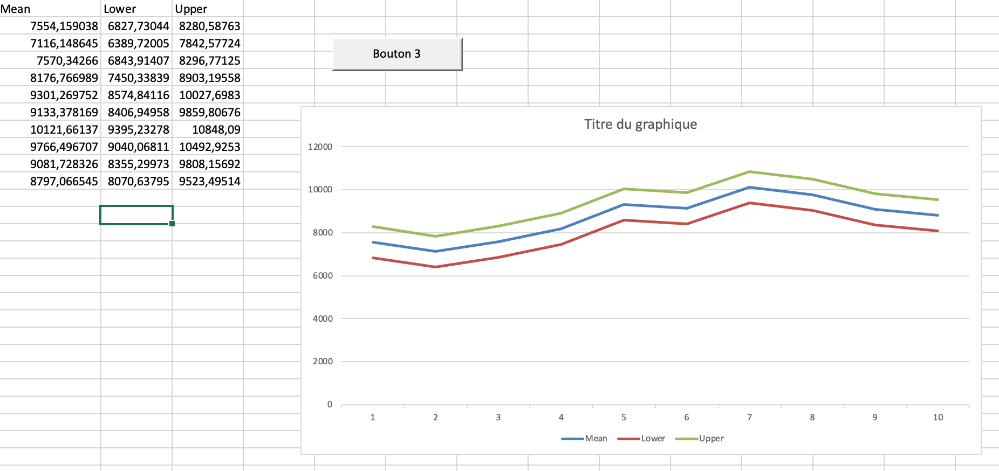

This is a server (that you can reproduce) allowing you to make Techtonique API calls from Microsoft Excel.
Techtonique's API allows you to do Machine Learning from your desktop, using the programming language that you like. This server is specific to Visual Basic for Excel. In order to get your API token, you need to register at https:www.techtonique.net, login, and navigate to https:www.techtonique.net/token.
Contents
See demo.xlsm.
After clicking the button in the Excel file, you should get something like:

See VBA-Web.xlsm. After clicking the button in the Excel file, you should get something looking like the previous graph.